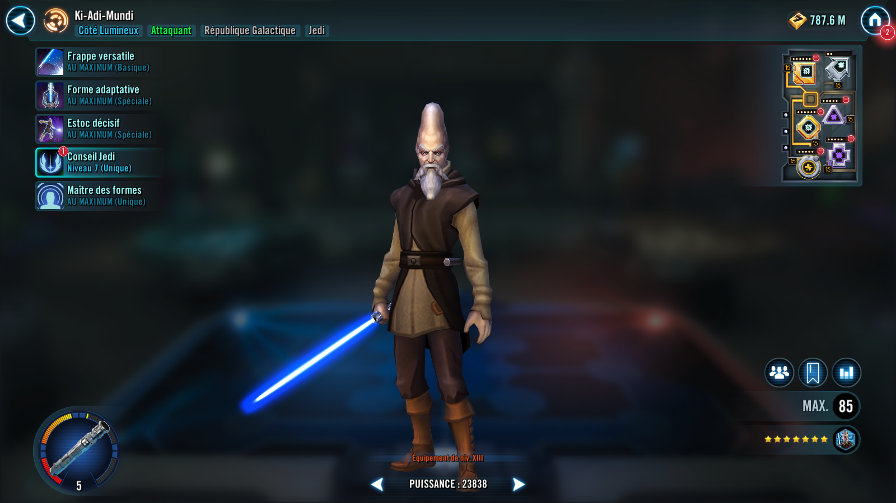

Ki-Adi-Mundi
Formidable Jedi Master who shifts between Ataru and Makashi lightsaber forms
Formidable Jedi Master who shifts between Ataru and Makashi lightsaber forms

Deal Physical damage to target enemy.
If Ki-Adi-Mundi is using Ataru Form, attack again.
If he's using Makashi Form, gain 15% Turn Meter and recover 10% Protection.
Switch forms, dispel all debuffs, and gain 100% Turn Meter.
Ataru Form: +100% Offense, +30% Defense Penetration, and +20 Speed
Makashi Form: +100% counter chance, +60% Tenacity, and Critical Hit Immunity
This ability is immune to cooldown manipulation.
Deal Physical damage to target enemy. This attack deals +100% damage for each Galactic Republic Jedi ally.
If Ki-Adi-Mundi is using Ataru Form and this ability defeats an enemy, reset all of his cooldowns.
If he's using Makashi Form, dispel all debuffs on Galactic Republic Jedi allies and they gain 25% Turn Meter.
At the start of each battle if all allies are Galactic Republic Jedi, they have +30 Speed, +40% Max Health, and +20% Offense.
Galactic Republic Jedi allies with a Support or Healer role have additional Offense equal to 10% of their Max Health.
Ki-Adi-Mundi starts the battle using Ataru Form and has an additional ability depending on which form he's using.
When Ki-Adi-Mundi switches to Makashi Form he recovers 10% Protection and gains Protection Up (30%) for 3 turns.
Ataru Lunge: Deal Physical damage to target enemy and inflict Armor Shred.
Makashi Jab: Daze all enemies for 2 turns and deal Physical damage to target enemy. This ability can't be evaded.
Deal Physical damage to target enemy and inflict Armor Shred.
Daze all enemies for 2 turns and deal Physical damage to target enemy. This ability can't be evaded.